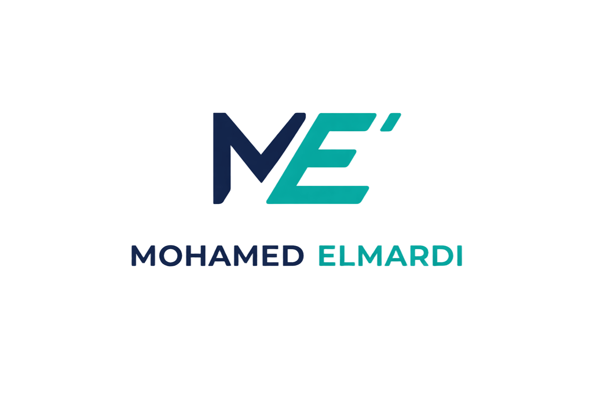
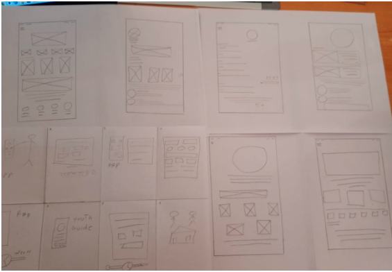
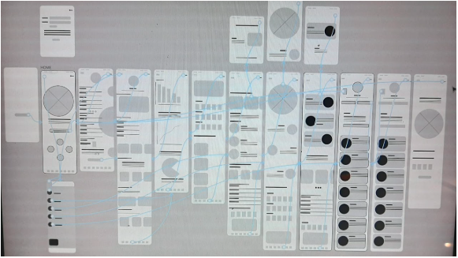
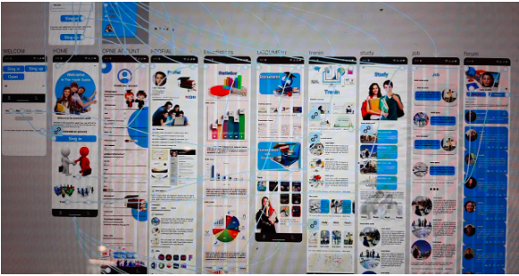

Solución
La solución final es una aplicación intuitiva y accesible que reúne oportunidades educativas y profesionales en una sola plataforma, mejorando la experiencia de búsqueda.


Plataforma digital diseñada para ayudar a jóvenes a acceder a oportunidades educativas, formación y empleo de manera simple y accesible.
Tras finalizar sus estudios, muchos jóvenes tienen dificultades para encontrar centros de formación, oportunidades laborales o instituciones educativas. La información está dispersa y requiere un gran esfuerzo de búsqueda.
Diseñar una aplicación centralizada que facilite el acceso a oportunidades de formación, empleo y estudios, de forma rápida, clara y accesible.
Jóvenes graduados, estudiantes y personas en búsqueda de formación o empleo, que necesitan acceso rápido y fiable a oportunidades educativas y profesionales.
Objetivo: Encontrar formación y oportunidades laborales cercanas.
Problema: Las plataformas actuales son confusas y tienen demasiada publicidad.
Objetivo: Acceder fácilmente a instituciones educativas y empleo.
Problema: Muchas aplicaciones no consideran la accesibilidad ni las necesidades reales de los usuarios.
La investigación con usuarios mostró que muchos jóvenes tienen dificultades para encontrar oportunidades fiables en un solo lugar. También se detectó una experiencia fragmentada entre diferentes plataformas.
El proceso de diseño siguió una metodología centrada en el usuario: investigación, creación de wireframes, prototipado, pruebas de usabilidad y mejoras iterativas.
Se realizaron pruebas con usuarios reales para validar la facilidad de uso. Los resultados ayudaron a simplificar la navegación y mejorar la experiencia general.



La solución final es una aplicación intuitiva y accesible que reúne oportunidades educativas y profesionales en una sola plataforma, mejorando la experiencia de búsqueda.
Youth Guide reduce significativamente el tiempo de búsqueda de oportunidades, mejorando la experiencia de los jóvenes y facilitando su acceso al mundo profesional.
La aplicación ayuda a los jóvenes a encontrar oportunidades de forma más rápida y organizada, reduciendo el tiempo de búsqueda y mejorando la toma de decisiones.
Construyamos algo increíble juntos.